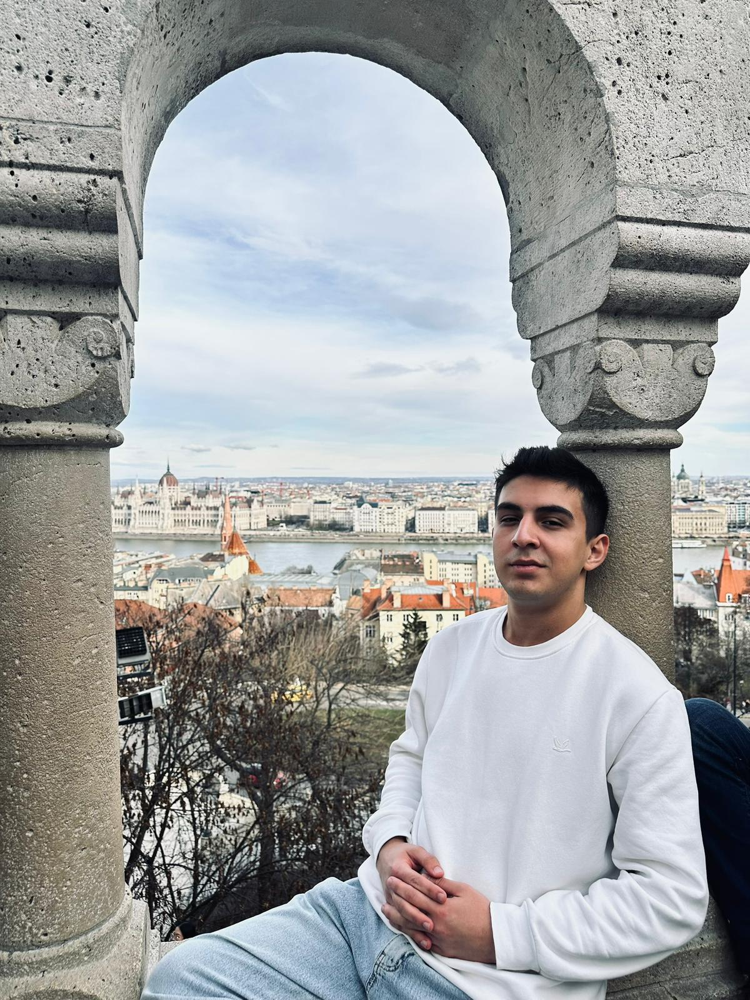
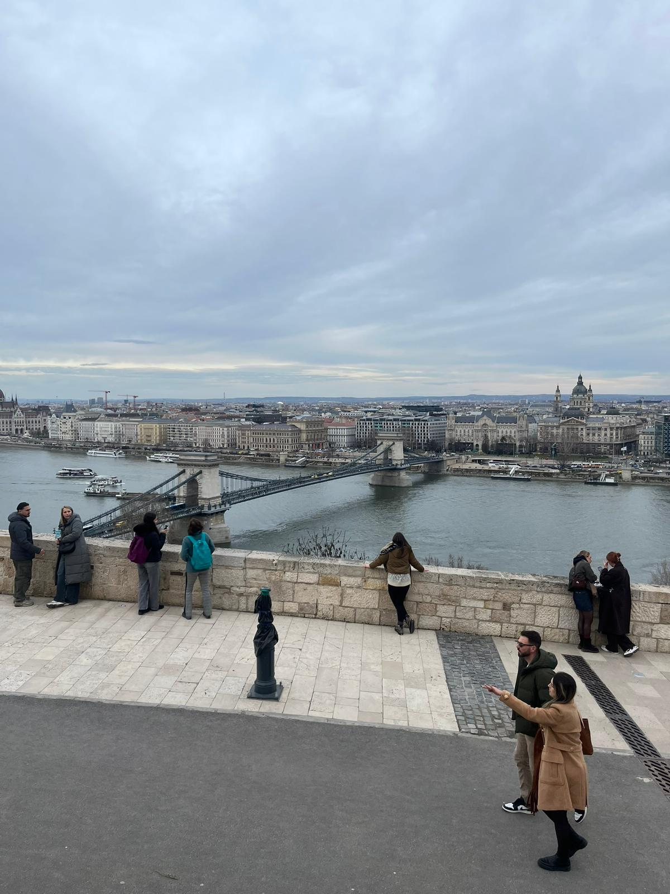
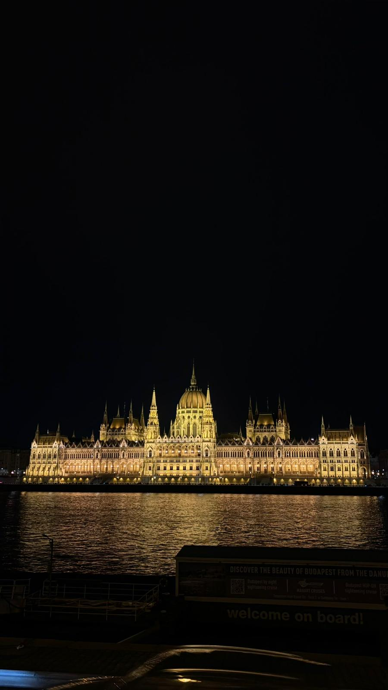
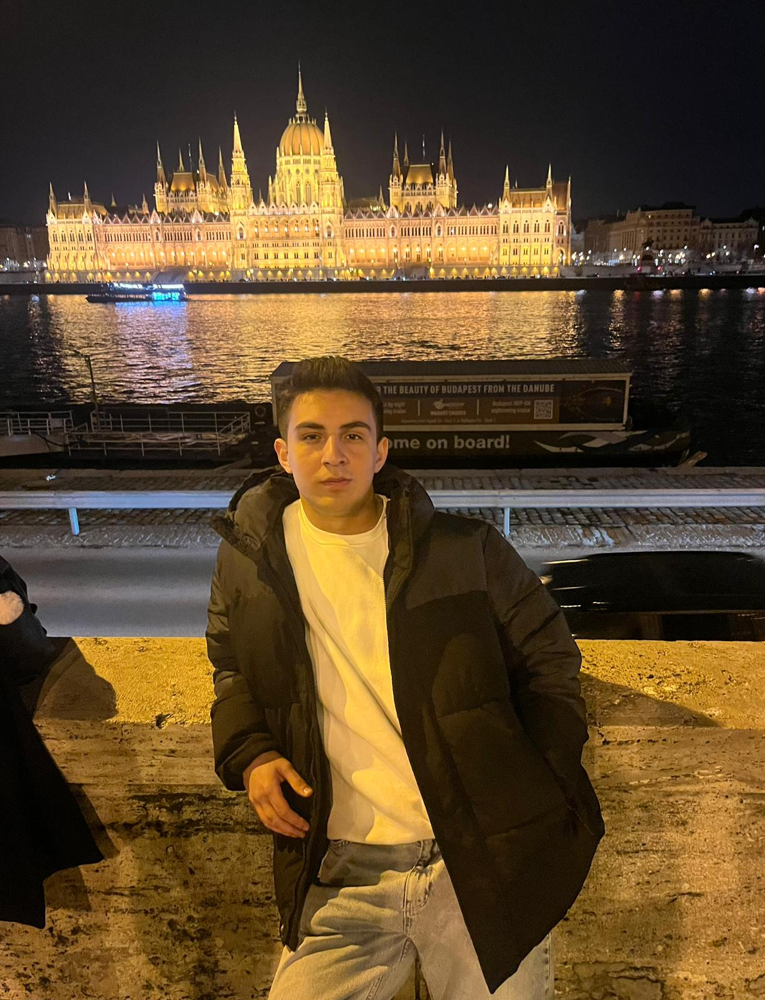

Hungary
Hungary was the country where I spent most of my time during my Erasmus experience because I was studying in Veszprém. To be honest, although Veszprém is a calm and peaceful city, it can also be a little boring because there are not many things to do. However, living there gave me the chance to experience everyday life in Hungary and focus on my studies while enjoying a slower pace of life. The other city I visited in Hungary was, of course, the capital city, Budapest. This was my first time visiting a big city in another country, and I was really impressed. The Danube River, Fisherman's Bastion, Buda Castle, and the beautiful bridges were all amazing. Everywhere I looked, there was something interesting to see, and the city felt full of energy and life. I felt something different while exploring Budapest. It was the first large European city I had ever visited, and everything felt exciting and new. I still remember walking through the city, looking at the historic buildings, and realizing that I was finally experiencing the kind of European city I had seen so many times in photos and videos. Since I was born and raised in Istanbul, I have always enjoyed the atmosphere of large cities, so it is not surprising that Budapest impressed me so much. Looking back, I think the fact that it was my first major city abroad made the experience even more special. Even today, when I think Contact my Erasmus journey, Budapest is one of the first places that comes to my mind and one of the cities I remember most positively.
Photo Gallery




Cities Visited
- Budapest
- Veszprém
Favorite Place
Parliament Building
My Rating
8/10 ⭐